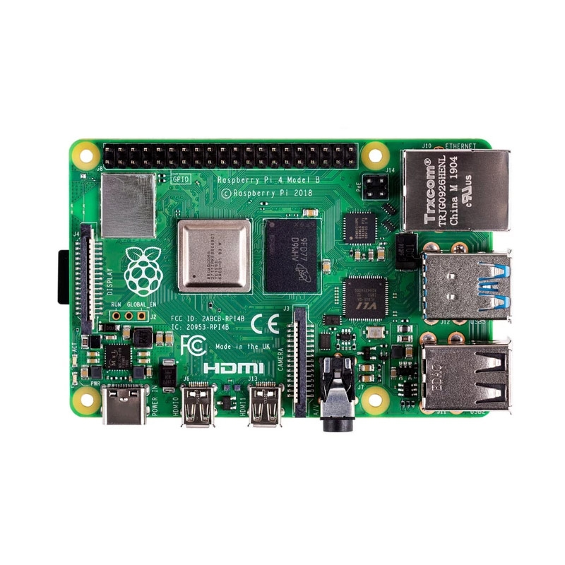

FortyOne
Team profile.
TEAM NAME
FortyOne
MEMBERS:
Aaron George -S3908226
Anish Pisavadia -S3893815
James Wall -S3908836
Jacob Britton -S3908842
PERSONAL INFORMATION
Our group at “FortyOne” comprises of 4 members extremely interested in everything tech, working together as a team to accomplish any problem, task or project put in front of us to the bestof our combined abilities.
GET TO KNOW US
Aaron George
A Paragraph from Aaron;
I was born in a suburb of Melbourne, Australia and have lived here my whole life. I have just finished secondary school and speak only one language, the Australian version of English. I enjoy most sports and have competed in many team sports like Soccer and Australian rules football, I currently compete in both off the beach and Keelboat sailing. On a personal note, I am easy going, enjoy meeting new people and experiencing new things. Once the borders re-open I hope to travel overseas, I would love to work or study for a periodin another culture and see how others really live.I have often wondered how things worked. I havepulled apart and rebuilt a varietyofelectronical items, successfully repairingsome,and notothers, I used to enjoy using basic programming tasks, like to make electronic toys move for example.My idea job would be aMedia and Events Senior Associaterole in an elite racing sport field such as F1 motor racing or sailing.
James Wall
A Paragraph from James;
My interest in Information Technology comes from the constant reminders of daily life that Information Technology is a benefit. I previously served in the army reserves as a rifleman for 2 years. I served almost 10 years ago, so I was quite young. During this period, I was not deployed so most of the time was spent training. I found it to be one of the most formative periods of my earlier life.Technology is increasingly becoming apart of the financial industry and innovation is highly desired. The application of programming and the desire for innovation in this industry makes striving to participate in it very exciting. In addition to the completion of a degree, I will need to prove my value by completing programming projects with the relevant technical skills that showcase my ability to first start in a junior or graduate java developer position.
Anish Pisavadia
A Paragraph from Anish;
Before pursuing a career in IT I accomplished 1stand 2nd-degree education. My nationality is British/Australian but culturally Indian, I speak Gujarati which is my national Indian language. I had first sparked an interest in IT attending coding classes in high school, where I learnt basic Python, which sparked an interest in Programming which led me to discover many IT based careers. Towards the end of my high school days, I discovered a “Information Technology” degree and decided that was my steppingstone to becoming a cybersecurity analyst. There were certain experiences that swayed me into the IT profession, like during the first major lockdown in 2020, where in Sydney we had 3 months of online schooling which resulted in me having extra time on my hands to discover and indulge in basic HTML and Python tutorials online. The more I learned with both languages, the more I became fascinated with Programming.
Jacob Britton
A Paragraph from Jacob
I grew up in a variety of rural country towns in Victoria, Australia after moving around a lot. I finished year 12 at Maffra Secondary College, whilst undergoing and completing a Cert II in Electrotechnology for the final 2 years of high school. Things I would do in my free time consisted of a LOT of video games but also Music once I found that to be a big passion of mine. My interest in technology started as soon as I was introduced to a gaming console and first mobile phone, my interest grew greatly once I was gifted a low-grade custom-built PC. Wanting to know more and how to upgrade PC’s, I took a dive into the “unknowing” world of PC parts and upgrading them, which opened a whole new passion.Being very interested in computer and tech hardware firstly, the hands-ontroubleshooting and repairing tech appliances or software appeals to me most for my ideal role, as resolving issues or malfunctions with devicesand applications provides me with a great sense of accomplishment.
TEAM PROFILE
Test Results.
Jacob’s test results:


Aaron’s test results:

James’test results:

Anish’s test results:


TEST RESULTS BREAKDOWN
After reviewing each member’s available test results, figuring out the sense of diversity in group “FortyOne”did not take long. Having this in mind whilstworking as a team and being considerate of each other’sstyle of working ina team, would help us get the most progress out ofour timeframes.With a few or one of us lacking in assertiveness or being extra introverted, its beneficial for us to recognise that and establishbetween uswho will have more of an ability to lead the group in the right direction. Overall,the group possesses a good work ethic individually, which provides us an advantageofstill getting work doneeven when we arenot communicating as efficiently or as much as it may be needed.As discovered throughout Assignment 1, being aware of certain personality and learning traits has played abig part in our success and process of completingall the tasks at hand. With a slight lack in communication and staying connected, as a group we were able to agree on away of going about all the tasks needing completion. Thanks to James, once the idea of separating the rubric out and segregating a couple tasks amongst each otherarose, we were all able to operate and contribute to the best of our abilities. Given the list of options and taking turns on choosingour preferred sections,whilstalso discussing which jobs suit whothe best, we were able to keep everyone inside the group happy.
Determining the areas wherewe are opposites was nottoo hard of a task. Just from viewing these results above, you can see how we can work well together as a team. For example, in a more in-depth analysis, Jacob’spersonality test results showan extra introverted, turbulent personality, whilst Aaron showsa moreextraverted, assertive personality, already proving the sense of personality diversity inside our group.James proving to act more on thinking rather than feeling put our foot forwardas a group getting started after a few problems in our early stages of this project, for example, agroup member withdrawing making us one member down. Anish being very high intheagreeablenessareaof one of the online tests helped made decisionseasywhen we fell behind a little.Especially after a few difficulties establishing who was in our team and contributing, giving us a little bit of a late starton getting to work as afully operationalgroup.
Tools.
As a group we have been given the task of creating a website that will display our “interests in IT, our understanding in IT technologies, what jobs we desire and an IT project idea which we will focus more on in the nex] assignment. We as a group decided to split the workload adequately so we each have an equal contribution for this task. To achieve this we first got into contact and set up a MS teams chat where we hosted several meetings where we discussed various topics, finalised any decisions and came to an understanding with one another so that no one was lost. We then proceeded to construct a table so that everyone knew what they were assigned. Such as…

Link of the website
Forty one (jwallcreations.github.io)
Link of the github repo
https://github.com/JWallCreations/assignment-2.git
How does the github repo reflects our work as a group
The github repo reflects our combined efforts, as each person was equality assigned a task and has successfully accomplished them. Especially the meetings where we elaborated on the allocation work and the compilation of the website where all the information would have to come together.
Link team meetings
Meeting1
26 March 2021 20:30 - 21:30
The agenda
Discuss Assignment 2
Create a team name
Discuss usage of Github
Discuss plan on how we're going to deliver the Assignment
Meeting Link
https://teams.microsoft.com/l/meetup-join/19%3aeee5d6e7d36f457ba262f014785bc296%40thread.tacv2/1616664316069?context=%7b%22Tid%22%3a%22d1323671-cdbe-4417-b4d4-bdb24b51316b%22%2c%22Oid%22%3a%226be509b2-14bd-45e1-8897-ec880bed09dc%22%7d
Meeting 2
12 April 2021 20:30 - 21:00
The agenda
Distributing assignment tasks
Discussion of obstacles to completion
Meeting Link
https://teams.microsoft.com/l/meetup-join/19%3aeee5d6e7d36f457ba262f014785bc296%40thread.tacv2/1618221301154?context=%7b%22Tid%22%3a%22d1323671-cdbe-4417-b4d4-bdb24b51316b%22%2c%22Oid%22%3a%2231cc06d2-fe28-4204-9ad2-5dcc9cfef032%22%7d
Meeting 3
13 April 2021 19:30 - 20:00
The agenda
Task progress
Meeting Link
https://teams.microsoft.com/l/meetup-join/19%3aeee5d6e7d36f457ba262f014785bc296%40thread.tacv2/1618297085521?context=%7b%22Tid%22%3a%22d1323671-cdbe-4417-b4d4-bdb24b51316b%22%2c%22Oid%22%3a%22828ef6cf-25ee-449e-9e9b-10c231aed725%22%7d
Links of each individual website for assignment one
Aaron’s website
James website
https://github.com/JWallCreations/assignment1.git
Jacob’s website
https://github.com/JBritton22/jbritton22.github.io.git
Anish’s website
https://github.com/Yadoozoo/Assignment1.git
IT Industries.
IT Industries
Interview One
Undefining information
Male aged above fifty years of age. They studied in computer science. They have been continually working in the Information Technology industry since the late 1980’s in various roles. Began IT career as a Software Developer, continue their career as a Consultant. Consulting on areas such as information builders, IT systems, pre/post sales, Infrastructure support, Information management, technical specialist. Current position is a Senior Solutions Architect. He has mainly worked in Australia but has had some oversea placements. Is based in Melbourne, prior to Co-vid 19 travel bans travelled oversea regularity.
1. Please tell about your IT work. What exactly do you do?
I work for a SAAS vendor New Relic. www.newrelic.comMy primary role is in services to help our customers get the most out of their investment in New Relic.
2. Please tell us about the industry you work in.
New Relic is a leader in the observability market. We observe systems. Through this observation we monitor Applications, Servers, Cloud Services, Browser Applications and Mobile applications. We help customers understand issues in their platforms. For example;
Why is my website slow ?
How long does an ecommerce transaction take to execute ?
Why is my application throwing a lot errors ?
How much traffic have we had today through our platform ?
Why is my Mobile app crashing ?
3. What other kinds of work do you have to do ?
training sessions for customers.
Collaboration– talking with my colleagues to work through issues both internal and external.
4. Who are all the different people you interact with in your work? Please give information about them.
I spend time talking with to
Application Developers - people who write and test code.
Operations Managers - people responsible for keeping systems going and resolving issues.
Business product owners - the people with overall responsibility for a system - eg a website or the payment component of and ecommerce system.
New Relic staff - we have staff all around the world and I frequently speak with them. 5
5. Please tell about your interaction with other IT professionals?
These are many and varied. I speak with my colleagues daily either over the phone or over Slack. We talk about issues we have and share our latest experiences for the everyone’s benefit.
6. What about your interactions with clients or investors?
My interactions with customers are almost exclusively concerned with making sure they get the most out of New Relic. How to use its features effectively for example.
7. What aspects of your work do you spend most time on? Please tell me about this.
I spend most of my time working on problems. Some of my customers have very challenging problems that we have to help them solve. This may be building a Dashbaord with complex queries, or creating an alert that sends alarms to people when issues are detected.
8. Which aspects of your work do you find most challenging?
Keeping up to date with new & emerging technologies. Getting time in peoples busy diaries.
9. Finally, can you share an example of the work you do that best captures the essence of the IT industry?
The IT industry is has been around for decades. It's 'essence' today is the same as it always has been - driving efficiency through digitization. I recent example of my work was supporting the creation of a COVID check-in app. A paper-based COVID registration would be an untenable unproductive process, due to the number of registrations and the data capture required. Digitizing the check-in process is really the only option. I worked on the monitoring of that app and the systems it was talking to. The customer could see the number of COVID check-ins per minute and how long each check-in took and diagnose any issues.
Interview Two
Undefining information
Male aged in mid 50’s. Has worked in the IT since the late 1988’s. Graduated from Monash University with a bachelor of computing and communications. Has spent over 30 years helping organisations to be early adopters of new technologies to achieve effective business outcomes. He began his work as a project and system Engineer in the development of UHF/VHF/Microwave radio technologies and control systems for a telecommunication company. This then led into Design and Planning management in security of data and voice networking infrastructure. Between the late 1990’s and 2010 he worked in various roles managing, marketing and sales in a growth development of data networking. Since around 2010 he has worked in the Cloud IT field, managing, securing and expanding business’ cloud networks.
1. Please tell about your IT work. What exactly do you do?
It’s different every day and different through my career. Mostly it involves using new technology to help companies be more effective in their business – whatever their business is. Right now I manage a team of architects and lead the company strategy on how to adopt cloud computing to support their business applications.
2. Please tell us about the industry you work in.
Banking and Finance – Cloud Architecture
3. What other kinds of work do you have to do ?
Apart from working with technology I manage people. I help set their performance goals, help them solve problems, and help them to develop themselves and learn new skills all the time
4. Who are all the different people you interact with in your work? Please give information about them.
I deal with everyone from the most senior executives in the company to junior staff/interns and suppliers. In other roles I have also supported customers directly.
5. Please tell about your interaction with other IT professionals?
I deal with teams doing design, engineering and operations. We all need to work together to solve proble
6. What about your interactions with clients or investors?
I have done that in the past but not in this role.
7. What aspects of your work do you spend most time on? Please tell me about this.
Solving problems. When working with new technology, there is a lot of research to be done, but also taking time to understand the business issues and making sure we are going to get the right outcomes from our work.
8. Which aspects of your work do you find most challenging?
Needing to spend a lot of time making sure everyone understands the strategy and what their role is. Sometimes that slows down progress.
9. Finally, can you share an example of the work you do that best captures the essence of the IT industry?
At the moment, a lot of companies are moving their applications to be cloud hosted. My team is ensuring that my company does it the right way, and that people are learning and growing their knowledge of how to do that effectively.
Interview 3
Undefining information
Male aged above 30 years of age. They studied in Information Technology. They have been continually working in the Information Technology industry since leaving school. Is the sole IT employee in a medium construction. They are responsible for purchasing all technology, managing networks and security. The company can have up to 20 sites operating at one time, in various states around the country.
1.Please tell us about the industry you work in.
I work in IT for a construction company. Here’s a great article that I would agree with generally: https://www.jobs.net/article/cb-214-talent-network-it-the-it-department-what-they-do-vs-what-everyone-thinks-they-do/
2.What other kinds of work do you have to do ?
I Also take care of any Special Projects that the Managing Director may require that might have a technical requirement some of these include:
Security
Facilities
Induction of new employees (In Person / Online Training Courses)
3.Who are all the different people you interact with in your work?Please give information about them.
Staff – employees of the business at all levels and areas
Management – Department heads and co-ordinators of sections
Senior Management / Directors – Key Senior Business Leaders
Stakeholders – Individuals with financial interest in the business
Subcontractors/Suppliers – 3rd Party Businesses employed or engaged by the business for business Activities
Vendors – 3rd Party Suppliers of Products/Services to the business
4.Please tell about your interaction with other IT professionals?
Mostly online or at annual Technology conferences, communication with Vendors or Subcontractor technical staff.
5.What about your interactions with clients or investors?
As needed, based on requirement, or as requested by Managing Director
6.What aspects of your work do you spend most time on? Please tell me about this.
Communication – I believe that this in a key part of the role I fulfill, effective communication with all individuals at all levels is as important as knowledge in my role. If you cannot effectively communicate assistance or information, servicing the business and achieving the initiatives/goals become exponentially more difficult.
8. Which aspects of your work do you find most challenging?
Time - As an IT Team of 1, there will be always more things/tasks to do than I am physically able to complete in any given day. These may all different levels of importance, but all need attention and all need to be closed out correctly – knowing your “job” is never “done” and that there is always more for you to do is a challenge, but satisfying on days when momentum and skill combine and significant progress can be made and perceived both by myself and by others around me.
9. Finally, can you share an example of the work you do that best captures the essence of the IT industry?
An example that best captures the essence of the IT industry that I do is when Technology itself is so well integrated and functions so well in the business - that it fades into the background and is no longer the focus of a task, but just an enabler of productivity and tool for progress. We have achieved this in some areas of the business and always strive for this across all areas.
Interview 4
Undefining information
Male aged about 60 years of age. Graduated from RMIT with a bachelor of Electronic and communication engineering. Worked in management and consulting positions in various field in Networking, security, Architecture and Applications both Australian and oversea.
1. Please tell about your IT work. What exactly do you do?
I manage an IT business Entrust ICT. This involves number of areas
- Engineering and product development
- IT System Architecture and Implementation
- Operation and support
2. Please tell us about the industry you work in.
Entrust ICT is a Wholesale Service of Information and Communication Technology solutions specialising in network and cloud based applications.
The services provide simple, reliable, scalable and cost effective solutions for SME, Corporate and Government market segments.
3. What other kinds of work do you have to do ?
- Project Management
- Strategy and Business Modelling
- Competitor analysis
- Commercial and contracts
4. Who are all the different people you interact with in your work?
There are different groups and areas of operations
- Customer Support
- Technical/Engineering
- IT systems development
- Sales and marketing,
- Finance and accounting
- Human Resources,
- Customers
- Third party application developers
- Service providers and suppliers
5. Please tell about your interaction with other IT professionals?
There are different types of interactions
Business As Usual
- Operations and Support meetings within the company to discuss performance and issues with services
Development or new services
- Project and Engineering meetings for reviews and to discussed new services and products
6 What about your interactions with clients or investors?
- Regular reviews and meetings . These include any issues with provisioning or operation of services and sales forecast including requests features/products/services they might need. - Ad-hoc meetings where a specific issue or matter is discussed
7. What aspects of your work do you spend most time on? Please tell me about this.
A large time of time is spent is management rather than directly on ICT
-Staff, operations and projects to ensure outcomes required by the business are meet
-Sales, marketing and customer relationships to ensure sales target are meet.
8. Which aspects of your work do you find most challenging?
Human interactions are the most challenging. It is necessary to ensure staff members are all working together to achieve the goals of the business.
9. Finally, can you share an example of the work you do that best captures the essence of the IT industry?
We provide broadband, private network, telephone and IT systems(e.g. stock control, point of sale, rostering) for a clothing retail chain.
The ICT solution we provide enables the retail chain to operate shops and provide go service their customers.
Industry Data.
What are the Job Titles for your group's ideal jobs?.
Computer Systems Engineer, Java Developer, Cyber Security Risk Analyst, Media&EventsAssociate.
How do each of these rank in terms of demand from employers?
Upon looking over the burning glass data Iwas able to find Java Developer’s being the highestin-demand job out of the 4 ideal jobs listed above. Computer systems engineers or architects are also in high demandaccording to data,but Iwould notsay as much as Software or Java developers.Cybersecurity and Media & Events jobs were difficult to put above or below one other, butin saying that withprivacy mattering more and more as we advance with technology, it makes sense for Security Analysts to rank a little higher in terms of employer-demand, as recordedin burning glass data.Media & Events jobsdemand proves to be increasing, again with technology advancing there is notmany jobs that are notIT-related or atleast becoming reliant on IT, but Ifeel confident in saying, although preferences are bound to change slightly, our 4 chosen ideal jobsare some of the mostin-demand in the employment market.
Individual IT-Specific Skill Set:
•Java Developer
JavaScript/JAVA
SQL
Microsoft Windows
Project Management
•Cyber Security Analyst
Microsoft Window
Systems Engineering
Risk Management
Technical Support
•Computer Systems Engineer
Systems Engineering
Microsoft Windows
Software Engineering
Technical Support
•Media & Events Associate
Project Management
Graphic Design
Business Analysis
Building Relationships / Networking
How do the IT-specific skills in your required skill set rank in terms of demand from employers?
According to Burning Glass dataMost of the“sought-after” or required IT-specific skills rank in the very top percent of skills in-demand from employers.While others may be a little lessin-demand, Systems engineering and software engineering ranking a little lower than other skills such asJavascript and Microsoftwindowsskills.
What are the three highest ranked IT-specific skills which are not in your required skill set?
From what I haveread and was able to determine, the three highest ranking skills I did not think of being required were; Business Process, SAP,Business Management. Havingthese skills may or maynot be required, but still could prove majorlybeneficial with said skills under your belt.
GroupGeneralSkill Set:
•Teamwork & Communication, Networking,Relationship building.
•Problem solving, Troubleshooting, Critical thinking
•Organisation, Time management, efficiency
•Presentation Skills, Multi-tasking, writing.
•Creativity, Analytical Skills, Research.
How do the general skills in your required skill set rank in terms of demand from employers?
Our group’s general skillset consists of some of the top sought-after skills in the industry, Communication and problem solving being at thetopof that list. Without forgetting to mention Organisation skills, writingand teamwork, Troubleshooting tends to be an industry-wide skill that employersare looking for when scoping potential tech employees. Planning, time management and analytical skills fall a little lower than skills already stated butare also quiteimportant traits an employerlooks forwhen hunting for new employees. The general skill sets in-demand by employersconsist of many, but having majority of these skills will giveyou a great advantagewith employment, especiallyin IT.
What are the three highest ranked general skills which are not in your required skillset?
Detail-Orientated, Mentoring and Qualityassurance / control are the top 3 skills Ihave not considered as required in our general skill set
Having looked at the Burning Glass data, has your opinion of your ideal job changed? Why or why not?
After researching a lot moreonideal jobs throughtheburning glass data, I believemy opinion hasnot changed drastically but become more specific. Before determining whatjobsand skills are in-demand the most by employers or businesses, Iwas ableto rule down andfigure out what it is Ireally do want to be involved in withinthe IT industry.In conclusion to reviewing the industry datasuppliedand after some critical thinking of course,I was able to find out and decide what the top 3-5 job titles and skillsets are when seeking employees inside the IT industryaround this time.
IT technologies.
IT technologies: Clouds, services, and servers.
What does it do?Cloud computing is the term used to describe the enabling of various computing resources to be conveniently utilised over the internet. These computing resources involve the use of services, servers, storage, networks and applications that can be rapidly accessed and allow the user to scale the amount of computing resources to their current and future needs.
Cloud computing utilises virtualisation which is the process of allowing multiple users to share a single computer (the server) – which fundamentally consists of a processor, memory, storage and network capacity -- at the same time without affecting each other; this contrasts to a single person using a single piece of hardware such as a laptop. Virtualisation is possible through software, called a hypervisor, which is loaded onto the server and allows multiple instances of an operating system to be run at the same time (Arabnia, Deligiannidis & Tinetti 2019, pg. 3). The importance of sharing a single piece of hardware is that often the amount of computing resources, such as processing power and storage, required are less than what the user needs which results in inefficient use of hardware and power consumption (Ruparelia, NB 2016, pg. 1).
Although it is possible to setup a private network that utilises virtualisation to reduce power and hardware inefficiencies, there are still many remaining issues such as managing hardware, security, and data. Providers of cloud computing, such as Amazon Web Services (AWS), offer to manage these issues and provide benefits which include applications and rapid access to these computing resources depending on user needs (Amazon Web Services 2021, Benefits of cloud computing). This allows the user to have limited upfront costs of purchasing hardware, hiring staff to manage it, whilst also allowing for flexibility in the amount of resources needed in the future.
Fox & Hao (2017, p. 477-478) describes the three main methods that cloud computing services offer as Infrastructure as a Service (IaaS), Platform as a service (PaaS), and Software as a Service (SaaS). These services are often called a stack because they start from a more basic service (IaaS) and increase to a more complex service (SaaS). IaaS is the most basic and offers hardware infrastructure which provides computing resources such as processing power, memory, storage and network capability. When choosing PaaS, in addition to what IaaS offers, the user will also be provided with necessary infrastructure such as operating systems and databases. Finally, in addition to what both IaaS and PaaS provide, SaaS will provide the entire package with the addition of software and application hosting. A popular example of SaaS use is Google workspace, Dropbox, and salesforce.

Fox & Hao (2017, p. 477-478) describes the three main methods that cloud computing services offer as Infrastructure as a Service (IaaS), Platform as a service (PaaS), and Software as a Service (SaaS). These services are often called a stack because they start from a more basic service (IaaS) and increase to a more complex service (SaaS). IaaS is the most basic and offers hardware infrastructure which provides computing resources such as processing power, memory, storage and network capability. When choosing PaaS, in addition to what IaaS offers, the user will also be provided with necessary infrastructure such as operating systems and databases. Finally, in addition to what both IaaS and PaaS provide, SaaS will provide the entire package with the addition of software and application hosting. A popular example of SaaS use is Google workspace, Dropbox, and salesforce.
What is the state of the art of this new technology? What can be done now?
Current cloud technology allows the user to purchase only the computing resources needed. This scalability is a major feature of the cloud and improvements through machine learning also allow the services to predict and change the computing resources required by the user. An example of this service is Amazon EC2 which recently released an auto scaling warm pools feature that allows applications to start faster and stop processes sooner allows you to increase and decrease the resources within only a few minutes (Amazon Web Services 2021, Amazon EC2 Auto Scaling introduces Warm Pools to accelerate scale out while saving money).
What is likely to be able to do be done soon (say in the next 3 years)?
One of the expanding technologies relating to cloud computing is fog computing which is expected to increase in usage over the coming years. This technology deploys computing resources (edge devices), such as mobile base stations, closer to the data sources to improve response times and network latency (Buyya et al. 2019, p. 3). This responsiveness allows users to operate and offload their high bandwidth applications and computational tasks, such as virtual reality and security, with lower performance issues than connecting directly to the main cloud server.
What technological or other developments make this possible?
With edge devices offering reduces latency and response times, it is desirable to cater to increasing bandwidth usage by users. Users on mobile devices will be able to take advantage of these cloud advancements with the assistance of wireless technologies such as 5G which may leverage a thousand-fold improvement over the previous generation (Ren et al. 2020, p.2).
What is the likely impact?
The use of edge devices for their improvements to responsiveness and bandwidth efficiencies is likely to impact everyone who uses the cloud. This includes the individuals who use their phones for private uses, such as video games, to larger organisations that utilise a great amount of bandwidth for surveillance recordings.
Individuals concerned with performance can benefit greatly from edge devices used by the cloud. Buyya et al. (2019, p. 11-12) describes the utilisation of edge device servers to take the burden of heavy processing whilst providing improved latency and response times. Interacting with edge devices through the fog computing concept, users of devices such as smartphones and health tracking watches can utilise the energy-saving features of the cloud whilst retaining their responsiveness.
Larger organisations often use large amounts of bandwidth, but also require more responsiveness than the main cloud server can provide. (Ren et al. (2020, p.2) describes the bandwidth usage concern for an airport that deals with thousands of surveillance cameras and the accumulating data that results from their recordings. With the use of edge devices such as dedicated smaller servers located near the data source (the airport) it is possible for these edge devices to filter through the video recordings before uploading them on to the main cloud servers. This filtering process allows for the reduction of otherwise large files to be more efficiency transmitted to the main cloud server.
Will this create, replace or make redundant any current jobs or technologies?
With the growth of the cloud and it being used as a substitute for storage and computation of localised devices, it will reduce the pressure of technology manufacturers of devices, such as smartphones and laptops, to expand the capabilities of them. Although advancements in these devices are desirable, especially the power consumption of smartphones, the increase in offloading of these demands onto the cloud may result the redundancy of large local storage capacity or other previously desired features.
How will this affect you?
With the cloud being present in so many parts of daily life it is difficult not to be affected. Daily I use products of the cloud such as online banking, Emails, media streaming services, and gaming. With the continuous expansion of edge computing servers, it will allow me to enjoy these services with less response time issues. This is especially important for online gaming for which response times and latency impact the activity significantly.
As someone who frequently uses devices in power saving modes, the increase in low latency cloud services through edge devices will allow me to use my smartphone with less worries of battery life. With the offloading of computing processes to the cloud I will be able to worry less about my phone’s battery draining and being stuck in important situations that require its use.
In addition to less power consumption worries, I no longer need to be as concerned with my smartphone having limited storage capacity. Previously if more storage was required, I would often have to purchase additional storage, but now cloud services often offer free storage.
What will be different for you?
Although as a user I most likely will not notice a significant decrease using cloud and edge computing, it is certainly easy to appreciate reduced annoyance from high response times of older cloud technologies. As I continue down the path of utilising more technology as a software developer, I am sure the daily benefits of cloud computing will become more appealing.
How might this affect members of your family or your friends?
Much of my family and friends have already enjoyed the benefits of cloud computing through its backup capabilities. Recently my family lost a lot of localised data relating to videos and pictures but were fortunate enough to have uploaded copies of this information to the cloud. Without the use of the cloud, they would not have been able to restore the data and nostalgic pictures would be lost forever.

Autonomous vehicles
What does it do?
Autonomous vehicles are an emerging technology that completely automates the driving element of the vehicle using complex AI technology. Autonomous vehicles are capable of sensing the environment around them and navigating their way through said environments safely with little to no human influence.
Technology
Autonomous vehicles use a combination of old and new technologies such as Radar, Sonar, Lidar, GPS, IMU (inertial measurements units) and odometry to operate a fully driverless vehicle. All these technologies help to identify appropriate navigation paths alongside identify relevant road signage and obstacles such as civilians and structures. Today we are seeing a definite future with autonomous vehicles as more and more companies are funding more and more research to develop driverless vehicles such as Tesla, Uber and Navya. Which have all put out semi-autonomous vehicles. Tesla has said it will offer a “subscription-based full self-driving” to vehicle owners in 2021. The technology now to develop driverless vehicle is rapidly advancing into a reality, so far Tesla has created an Autonomous vehicle which was under the name “Tesla Autopilot” in 2015. Tesla rolled out a version 7 update in the US which concluded Autopilot capability. Later in 2016 version 7.1 emerged adding a new feature that allowed to summon cars or self-park at parking locations. This feature is still being used today but required the full attention of the driver as the Tesla Autopilot will occasionally fail to detect lane markings and disengage itself. In regards to the Tesla Autopilot, it is almost certain that we will see fully automated vehicles in the distant future. With companies such as Tesla reducing human activity with certain driving elements is certainly a step closer to achieving a fully automated vehicle.
However, there have been reports regarding Tesla’s reliability in terms of the “Autopilot feature” as on the 20th January 2016 the first fatal crash occurred whilst under the “Autopilot feature” where the driver wasn’t paying attention to their surroundings and this is one of those incidents where the autopilot failed to identify the road markings and crashed the vehicle. There have been multiple occasions where the Tesla vehicle has crashed and even killing a passenger. The technology used in these vehicles needs further refinement over the years to truly be autonomous without any human support.
Today technological advancements in autonomous vehicles today have been mostly used consistently with long-distance truck drivers which have a feature called “cruise control” which maintains the speed and has sensors to indicate the driver if you are in danger of a collision using sensors. These procedures half automate the long-distance control over the vehicle. If technology keeps advancing at this rate by 2030 one in every 10 cars will be fully automated globally.
What is the likely impact?
This technology will have a tremendous impact on society as we know it. Driving will be completely automated with the driver having little to no interaction with the controls. The impacts of this development are technological, economic and societal. Impacts include
•The decline in sales of transportation costs due to competition
•Mobility for the elderly and disabled will increase
•Fewer cars will travel more miles because of the increase in-vehicle use.
•Fewer vehicles will have to be produced yearly
• The oil industry will experience a severe decrease in sales
•Air pollution and greenhouse gasses will virtually be eliminated from vehicles
What will change
Changes will be made to the society, economy and technology such as
What will change
Changes will be made to the society, economy and technology such as
Societal
*The way people drive
*Fewer people will own a car as it will become a service
Economical
Saving costs
Reduced crashes
Fuel efficiency
The creation of new jobs.
Environmental
Eliminated fossil fuels emitted from vehicles
Eliminated the emission of greenhouse gasses from vehicles
Reduction of global warming
Technology
Advancements in technology.
Who will be affected
There will be a margin of people who will be affected by the roll-out of automated vehicles, such as taxi companies e.g Uber, Didi, infinite cab, taxicabs, 13 cabs. Taxi drivers will be made redundant cutting the job entirely. A lot of workers will have lost their jobs in the transportation industry due to vehicles being automated. Trains have already started and are on the typing point of being fully automated. For example, the Sydney metro in Australia is one of the first fully automated vehicles. The Sydney Metro is completely automated with no human interaction. And has proven to be a success with the daily transportation between each stop. This has eradicated the workforce for the metro line as they do not require staff on board which has reduced jobs in the transportation industry
What jobs are automated vehicles going to create?
With automated vehicles taking numerous jobs from the transportation industry. Autonomous vehicles have created more jobs such as…
• Customer success field representative
• Perception software engineer
• Strategic account manager
• Autonomous navigation software
• Feild service technition
• Industrial engineer
• Field autonomy manager
With autonomous vehicles taking a huge number of supervisory roles in the transportation industry. It will create a number of new ones and create a demand for existing jobs such as “engineers” this will greatly help the economy with the job loss.
The technology used in vehicles today will not be lost but merely transformed and elevated to a higher standard. With the introduction of autonomous vehicles comes more software being placed into the vehicles. And where the next generation vehicles we are seeing a high rise in electric cars instead of the diesel/petrol cars. This is extremely environmentally friendly and eradicates greenhouse gasses and other pollutants, which will greatly help our environment. Furthermore, several governments around the world have been pleased with this new idea and have eradicated carbon emission in various cities e.g “London city” which is helping the environment. Technologies such as the “combustion engine” will soon become obsolete as the “induction motor” will replace it proving to be less complicated, heavy and more efficient than the standard” combustion engine”.
how will this affect you?
This will be a drastic change for me as having control over your driving was a natural thing but if technology reaches the point of autonomous vehicles it would definitely be strange being in the driver’s seat but not being able to drive. The trains, trucks and other vehicles wouldn’t personally affect me too much as it rarely concerns me in my way of life but it would definitely take time for me and my family to get used to not being behind the wheel.
Raspberry Pi’s
Raspberry Pi’s are a low-priced small credit card sized computer containing only everything you need to connect a monitor, keyboard, mouse and the internet with some even featuring Bluetooth and Wi-Fi for example. Newer editions of the Raspberry Pi like the model B series pack impressive features for its small size, sneaking up “on-par” with most laptops or small computers power wise.
o 4 USB ports o Ethernet o 4gb RAM o Quad-core Processor o Wi-Fi & Bluetooth o Dual Monitor Support
Development
The Pi wasinitiallya micro-computer used to teach coding, but oncefoundin the hands of hobbyist andengineers alike,the potential of thissmall piece of techwas revealed making it one of the most popular tech items world-wide.There is a long list of capabilities with Raspberry Pis and other small computing devices, of which is ever-expanding due to the rapid development of technology in general. Hardware is becoming more powerful all while also decreasing in size, it is no hidden fact that as we advance with technology the “chunkiness” or size of a device is a huge factor taken into consideration regarding hardware tech advancement.Raspberry Pi’s being one of the first things I discovered once taking a deep dive into IT, I was very surprised by the amount of power they can produce for such a compact little card, more so for how useful these devices can be for people of any level of tech experience or knowledge. As soon as I hit search with “Raspberry Pi” in the google search bar, I was able to see how popular they are with many different projects being shared and spoken about all over the net. With resources like YouTube& Redditto learn how to emulate these projects and do it yourself, there is a MASSIVE community of people sharing their creations and teaching others how-to. Buying branded, overpriced and really just simple electronic devices is becoming overrated, because why not just build it yourself?
Models / Generations
The first gen Raspberry Pi (Model B) released in February 2012, with a follow up Model A2 years laterin 2014.The “Raspberry Pi 2” was then released in 2015 originally comprising of a 900MHz 32-bit processor with 1gb RAM,with later versions featuring a 1.2Ghz 64-bit processor. With Raspberry Pi’s being only a decade in the market they have already shown how far they can come in such small spans of time.In the same year, theRaspberryPi 2was released,a smaller size“Raspberry Pi Zero” was introduced with reducedInput/Outputand GPIOcapabilities.2 years afterthe release of the Raspberry Pi Zero,in 2017 a newer versionof theZeromodelfeaturing Wi-Fi and Bluetoothcapabilities was launchedas the“Raspberry Pi Zero W”model, with the “Zero WH” modelfollowing at the beginning of 2018.The WH model came with pre-soldered GPIO headers, knockingoutthe lack of I/O capabilities fromthe“Zero”generationof Raspberry Pi’s, proving yet again how rapidthe advancement is with small computing technologies. There have been many different models over many


generationsof the Raspberry Pi, from Pi 1 to 4 and everything in between. Most launches generally including A and B models, A model being the lesser costing variantwith reduced capabilites,and B being the initial model without any re-evaluateddesigns orbeing reduced down into something more compact and simple.The full list ofallthe models follow below;
Pi 1 Model B (2012)
Pi 1 Model A(2013)
Pi 1 Model B+(2014
Pi 1 Model A+ (2014)
Pi 2 Model B(2015)
Pi Zero (2015)
Pi 3 Model B (2016)
Pi Zero W (2017)
Pi 3 Model B+(2018)
Pi 3 Model A+(2019)
Pi 4 Model A (2019)
Pi 4 Model B (2020)
Pi 400 (2021)


GPIOPins
General PurposeInput/Output pins are a powerful feature on the Pi’s located at the top of the board containing 40GPIOpins. Prior to its 2014 Pi 1 model, the boards only held 26-pin GPIO’s.The pins send and receiveelectrical signalsallowingyou to controlthem throughan Operating System,meaning you can control a range of things that require electricity to run;LEDlights, buttons, switches, motors, audio & radio signals, LCD’sthe list goes on.
A few examples of leading projects out there:
Wi-Fi Extender
LCD Displays (clocks, stats, images & videosetc.)
Smart Mirror
Media Streaming (DIY chrome cast)
Security Cameras
AI Thermometer
Network Attached Storage (NAS)
Touchscreen Tablets


How will this affect you?
In the long run this will affectme ina hobbyist way, I am very interested in making my own means of somethinguseful. Finding out how advanced it can get and is becoming with small computing devices like the raspberry pi’sfills myself withnothing but excitement and curiosity. Knowing I canmake small and handy devicesfrom the comfort of my home with these devices is ground-breaking, no more forking out ridiculous amounts of money for small, highly breakable devices used daily? Yes please.Along with that I believe the massive community already out there amongst raspberry pi’s affects the way I canlearn about this technology, simply typing in a search bar ‘how to make a smart mirror’ for an example.AI Thermometer? Who knew I would be able to tell who has a fever when they enter my home or quarters, small computing technology is ground-breaking to D.I.Yas an aspect. Not only all that, but I alsofeel this technology has furthered my interest in my ideal job, computing& hardwareengineering, wanting to know more of what is out there and can be done now. Before I chuck away or consider any unused electronics like TV’s or computers useless to me, I now think of them as useful for making another electronic device, raspberry pi’s make that doable.
References
Smart mirror photo reference:Design Review: Smart Mirror –Aesthetics of Design (aesdes.org)Leading Project examples reference: 17 Best Raspberry Pi Projects for 2021 | Simply Smarter Circuitry Blog (circuitspecialists.com)Smart Mirror
Natural Language processing (NLP) and chatterbots
Background
There are many Information Technologies and they take different forms. These all relate to a computer’s interactions with the user and other computers. Looking a current area which deals with Natural Languages processing and chatterbots. What do they do? To say what they do we need to understand what they are.
Natural Language process (NLP) is how a computer which is a machine is programmed to think like humans. The machine then uses this knowledge to communicate with the human, in a method which is easily understood by them. NLP is a simply a complicated computer interface between the user and machine. The aim is to have the computer think as much as possible like a human, enabling it to understand what the human is saying, thinking or may do. With this gained knowledge the computer gives the outcome as if it was a human. How good a NLP is, since the 1950’s has been gauged by The Turning Test which was developed by English mathematician Alan M Turning to determine if a computer program can think.
Traditionally NLP have developed techniques which used theories, which have used a set of algorithms to process the language spoken by people when using computers. Historically NLP was based on Basic Grammar patterns which were called LISP systems. This transformed to “prologue” logic programming which based solutions on concepts, based on oral language structure. It used parse tree to find solution to questions. Currently many are based on “Neural nets”. These are artificial neural networks which were the computer system models the human brain and nervous system to determine solutions by establishing pattern for the user. When you think NLP think artificial intelligence.
Chatterbots is currently one of the most common forms of Natural Processing language user interfaces. They allow you to look, obtain and share all kinds of information with the use of an IT device in a human like interface. Chatterbots also called chatbot are user application programs which as the name suggests communicates with the user through conversation using various inputs. Examples are text to text, speech to text, speech to speech, facial expression to text/speech etc. Chatterbots are used for messages and aim to mimic a human, to obtain information from the users and give feedback on this information. They are inbuilt to most IT devices without the user aware of them, for example Siri, hey google, dictation tools, spell and grammar checks etc. These programs regulate previous gained information in convoluted manner which to the user, seems like intelligent talking. They get words from the user transform these words into a pattern which the machine can understand, then process it and give an output in another word pattern which sounds like they are talking back to the user, given feedback to their input.
They are used in many fields which involve mondain human contact, such as tradition call centres, medicine, government, entertainment, and business. They are used in business to help give or obtain information to customers, to free up humans. Users can give their orders, problems, and feedback to a chatbot. Eg a user has a problem with their mobile phone service. They are prompted to give their account details by the machine. The machine then uses this information to locate their database. The machine can then give automatic responses, then try and solve the problem eg reset, turn off/on. The machine then uses knowledge base. This was what it was initially program for, along with what it has built from previous user interaction. It completes, if /when scenarios to try and solve the user’s problem. The interaction continues once the problem is solved, or the task is too complicated for the bots programming and the bot refers the user to a human.
With the speed of advancement in the IT industry in the past few years mean many current form of chatbot which are currently being used have been partly superseded. During the current pandemic and shift to online shopping NLP have been used to help customers with their shopping. They help establish list and prompts shopper of add on purchases. They also can use an inputted imagine along with measurements to show what the products may look like on the intended users, likewise this can be done with household item to show what they installed in the user house
Direction and effect of Natural Language processing (NLP)
With the boom in IT, there is more money available for investment in research and development in NLP. The below right graph reflects the past 40 years, development and implementation of this technology. In recent years there has been massive in growth. The table on the left shows predicted uses for chatbots.
In the next three years NPL is likely to move from server side to edge based technologies such as those being developed by Brainchip ™ and Neuralink ™. These designs are aimed to mimic brain functioning. They will one day read brain signals via a wireless minicomputer chips. Then transform this collected data into unsalable knowledge and tasks of the users.
In Australia all government agencies, power and telecommunication along with other consumer companies have been using NPL in some form. All customers have been exposed to this interface directly and indirectly. The impact has been both good and bad for the user.
The future paths are still very clouded. I could predict in the next few years it may advance more to be developed into an interface, overcoming the current frustration and short fall uses may have with it. It may also plateau due to it becoming obsolete as it is replaced by other Artificial intelligence development such as BrainChip ™.
Due to the amount which has been invested in chatbots, it highly likely they will be fine tuned. Existing businesses will make improvement to maintain their chatbots. This will continue to improve our everyday lives access to information and the associated cost. If Brainchip ™ or the likes are developed enough to be commercially viable in the next three year, and marketed correctly then the impacts astronomical. Eg with the Brainchip ™, the user just has to think to turn on the lights.
The potential impact of this development is both good and bad. If chatbot continue to be developed at the current rate, there will be a lot more bots. This would help companies save money and users the enhancement of information access in any 24/7 time frame. Integration and assimilation of people working and living in different time zones and countries will improve. The negative would be human to human contact would be greatly reduced. It likely will increase scammers use to get vulnerable people scammed via telephone or internet. The amount of internet junk will also increase.
Many people will be able to access and give information with greater ease, informs they can relate to. Many of the existing call centres will close with jobs losses. Very little IT jobs will be created as NLP will be cheap to maintain. Scam callers will also become redundant. You can run a lot more scams at once because you can have one bot do the work of many. Retail employees will also be reduced, with increased buying opinions. As the NLP will also replace some marketing jobs, as an algorithm will determine what adds they see when integrating with technology.
Personal Effect
NPL advances are likely to affect my friends, my family and myself in the same way. If I think of my daily life how will NPL effect how I live in the future. This would depend on how much money I have available to access the technologies. In general terms it would effect me in the different ways, how I access goods and services examples would be;
Obtain money from the bank. Society will become more cashless, physical money will be phased out. Currently due to the pandemic many places have stop excepting money and only electronic transfers. The bank teller will disappear, along with many ATM, bank customer service will be chatbots.
Postal service will change, letters will not be sent, but parcels will increase for NLP sales.
Shopping my shopping will be likely to be more automated with the system being able to predict what I need to buy. Programs will be able to source the cheapest prices for item which I need.
Public transport will become partly automated. Some driverless vehicles will be phased in. Fare systems would be control via picking up app signals rather than physical cards.
In my house there will be an increase in devices which can be controlled by NLP. Eg voice control appliances. What will be different for you? How might this affect members of your family or your friends?
In interaction some of my friends could be controlled virtual with NPL. Vetting and monitoring of them could happen (Big Brother). Establishment of compatible matches based personalities. I could have conversation with virtual people.
Jobs structures and descriptions will change slightly, you may be able to do less hours by getting your Artificial Intelligent device to help you.
NLP could also help with increase finances with being able to predict the investment markets and how to save based on altering spending patterns.
Medical services may be affected. You may have to go to a chatbot before you obtain medical or phycological services
Filtering chatbot can remove freedom of speech and filter out any comments made which be offensive to others. Resilience programs could also be obtained.
Movies could scripts written by chatbots by them sampling other scripts about the same genre. These could also be dubbed into any language requested by the viewer.
Novels and stories could be personal created by chatbot for the intend audiences again based on sample of previous novels liked by the audience.
In education chat bot could help in developing a program to deliver the required use curriculum. Curriculum and lesson could be personally targeted to the needs of the students. Eg a chatbot could do an individual learning plan for each student in the class. In other words a chatbot would be replacing the teacher’s aides. If a teacher wished to teach a topic, a chatbox could research the topic and produce handout for the students.
A downside is student or employee could have a chatbox do their task for them. Online tests could be done by a chatbox. A plus would be a brainchip™ would eliminate this to a certain extent.
References
Towardsdatascience.com. 2018.(Shashikant) Convolutional Neural Network: A Step By Step Guide.[ONLINE] Available at: https://towardsdatascience.com/convolutional-neural-network-a-step-by-step-guide-a8b4c88d6943.{Accessed [7 April 2021].
Eenewseurope. December 23, 2020. (Nick Flaherty) NASA looks to BrainChip's spiking neural network chip for space [ONLINE] Available at: URL:https://www.eenewseurope.com/news/nasa-brainchip-akida-space[Accessed 10 Apr. 2021].
Natural Language Processing. 2021 (n.d.) Wikipedia [ONLINE] Available at: https://en.wikipedia.org/wiki/Natural_language_processing [8 April 2021].
Chatbot. 2021 (n.d) Chatbot Australia [ONLINE]Chatbot Australia | Free Trial | Chatbot | Chatbot.com.au [10 April 2021]
Group, U., 2021. (n.d). Artificial Intelligence - Computer Science Field Guide. [online] Csfieldguide.org.nz. Available at: https://www.csfieldguide.org.nz/en/chapters/artificial-intelligence/chatterbots-and-the-turing-test/ [Accessed 8 April 2021].
En.wikipedia.org. 2021. (n.d). Chatbot - Wikipedia. [online] Available at:
SearchEnterpriseAI. 2021. (n.d.) What is the Turing Test? - Definition from WhatIs.com. [online] Available at:
Information Age. 2021. (n.d) Adopting an AI chatbot to improve customer and employee experience. [online] Available at: https://www.information-age.com/adopting-ai-chatbot-customer-employee-experience-123484849/ [Accessed 2 April 2021].
Einfochips.com. 2018. (Smishad Thomas).9 A Complete Guide to Chatbot Development: From Tools to Best Practices. [online] Available at:
Drift. 2021.(n.d) Chatbots - The Beginners Guide to Chatbot Technology | Drift. [online] Available at:
Einfochips.com. 2021.(n.d) A Complete Guide to Chatbot Development: From Tools to Best Practices. [online] Available at:
Medium. 2021. (n.d)Your Guide to Natural Language Processing (NLP). [online] Available at:
BrainChip. 2021. (n.d)AI at the Edge - BrainChip. [online] Available at:
Mindmatters.ai. 2021. (n.d). [online] Available at:
Fan, S., 2021. Neuralink's Wildly Anticipated New Brain Implant: the Hype vs. the Science. [online] Singularity Hub. Available at:
Neuralink. 2021. (n.d). Home. [online] Available at:
Project Idea: Health diagnosis application.
Overview:
This health application will perform a broad range of services that are usually separated into different applications. These services will involve health advice, health tracking, and discussion forums, which will provide benefits to the user and consulted medical professionals. Health advice will offer preventative and reactive medical advice which enables the user to improve health whilst preventing and treating illnesses. To provide the high-quality advice, artificial intelligence and cloud computing services will be used to store and analyse medical data which advises based on the latest medical standards. Additionally, forums will be used to discuss health, fitness, and general topics which will provide a social and engaging atmosphere. The application is intended as a tool to be used in conjunction with the appropriate healthcare professionals should be consulted about the information provided by the application.
Motivation:
Health is a foundation for happiness and productivity, as well as a major economic concern, it shows a strong reason for developing tools that assist with the promotion of individual health. The health industry is growing every year, and with the increased growth and availability of information, it is becoming more difficult to make an optimal choice to improve and manage our health. This lack of certainty and increased complexity creates a need for the simplification and streamlining of medical information to the individual.
To alleviate the concerns with choosing from many health options, technologies such as cloud computing, artificial intelligence, and health tracking devices are allowing for improvements in the provision of health-related services. Currently there are applications which provide symptom checking services by utilising artificial intelligence, however the scope of these could be expanded. Expanding the scope health applications to advise based on medical history and monitored health data, in addition to symptoms, will provide more accurate health advice resulting in better health outcomes.
Description:
The proposed health application has a large scope of services that provides the user with more tailored health advice than previous health application iterations whilst also encouraging social interact through online forums. This will allow the user to make more informed decisions about preventative health measures such as exercise, medication, and lifestyle; or treatments related to their diseases and how their diseases, medication and current health data interacts. The user will benefit from this advice which should result in a better quality of life and less time spent waiting on medical professionals. This tailored advise is achieved by using both medical history and monitoring current health data through user devices, whilst utilising both cloud servers and artificial intelligence technology.
By using cloud technology, it makes it possible for the user to always stay connected to the cloud and have their data accessible from anywhere. Staying connected to the cloud is important for many devices as it prevents the loss of data associated with storing information locally. In addition to providing storage benefits, it will allow for the cloud computing services to manage computationally intensive tasks relating to artificial intelligence that will be needed to analyse the data and offer advice. The cloud will be used to store previous health data, such as medical records, and current monitored health data. Types of monitored data can include heart rate, steps walked each day, temperature, respiratory rate, ingested smart pills, and detection of falls. This monitored data will be processed by artificial intelligence.
Using artificial intelligence, the application will sort through vast amounts of medical information, analyse it, and offer advice that is specific to the individual’s situation. Artificial intelligence has the benefit of being able to learn from this data and improve upon future advice. With the increasing data collection from users, the advice will improve over time. Previous health diagnosis applications utilising artificial intelligence would offer advice based on described symptoms – such as fever, insomnia or pain -- which would potentially provide diagnoses not specific to the user. The proposed application will provide a more specific diagnosis by using the user’s medical history and current monitored health data in addition to the described symptoms.
Cloud services and artificial intelligence providing the foundation for the application, but it is important to assist the users in achieving an understanding of ideal health. The application will allow users to create a profile and input data relating to their physical health. This data will be compared to ideal health data in categories such as weight, blood pressure, heart rate, diet, and nutrition in blood test results. The data provided could cause the application to give warnings about any health issues that may arise from the user’s current health data, such as their weight contributing to the likelihood of diabetes, or their blood pressure being higher or lower than normal.
This data can also provide additional specificity in relation to any other health conditions that the user might be suffering from. For example, if the user inputs the data of being overweight and having diabetes, the application will provide a message detailing the health interaction between the user’s weight and how it may affect diabetes. In addition to the information provided about the interaction it will also give preventative treatments.
Although diabetes is an example that is usually a slow progression, there are uses of this application that assist with more immediate concerns such as an elderly person falling. The health application would work alongside third-party devices to alert the appropriate people of accidents. An example of a third-party device is a belt worn by the elderly that assists with falls. To protect the user, this belt has a range of features. The belt will protect the user by inflating if they fall, alerting the caregiver, and recording metrics on their balance and proprioception. In addition to the main functions of the belt, this health application would notify the user’s designated health professionals of the incident. Also, the data from the belt would be used to provide a more comprehensive health record for the user. And in this case, the metrics about balance will certainly provide more accurate health recommendations for the future. This data relating to balance could be used to diagnose proprioceptive related illnesses such as Meniere’s disease.
Another example of this applications interaction with third-party devices is with the use of Smart pills. Smart pills are a drug that contains sensers in it that activate when the ingested pill comes into contact with stomach fluids. This Smart pill is commonly used to record compliance for medication. Although this example is another third-party device, the proposed health application would record the compliance rates as another form of data. This data could be used in the context of future diagnoses relating to symptoms such as forgetfulness if the user has a low compliance rate for medication. If the compliance issues are related to forgetfulness, then the data could possibly contribute to the diagnoses of Alzheimer’s.
By using the large range of health data collection methods, the application will provide preventative treatment advice which can slow the progression of a disease and in some cases prevent it from occurring. Due to the sedentary lifestyle of modern society, lack of physical activity plays a major role in disease. Although there are many preventative treatments that will be provided by the application to the user which are unrelated to fitness, the role of fitness and daily activity are heavily promoted by the application. Daily goals of physical exercise will be monitored and compared to the user’s weight, blood pressure, and other data. To add incentive to complete the daily goals there will be a social element of comparing physical exercise for the day to other users. This can be in the form of calories consumed or steps travelled which could be monitored by third party devices such as Smart watches.
Not all health conditions are preventable, and some interfere with preventative treatments. It is also the aim of the application to offer advice for the user to enable them to manage their health in a non-fitness related capacity. The application will use the entirety of its stored health data from methods details above to provide treatment advice while managing additional considerations such as medicine contraindications. An example contraindication is a harmful combination of medications that will cause the application to display warning messages to alert the user to the potential harm. Treatments can be complex and worrying, and even sometimes palliative, even with the assistance of this application, so the application encourages users to discuss the content with others through a discussion forum.
The discussion forum is of great benefit to the application’s community and encourages further learning, sharing of health concerns, and participation. It will promote an atmosphere of wellness and allow likeminded individuals to connect and talk about their health concerns. It will have dedicated and general forums to discuss all issues relating to health and links will be provided to the appropriate forum under each of the user’s health conditions.
Tools and technologies:
The use of cloud computing technology will be utilised through a provider such as Amazon Web Services. The cloud services will most likely use the more comprehensive service of Software as a Service (SaaS) which provides the hardware infrastructure, operating systems, and software needed. This will result in more flexibility for the early stages of the applications development. In addition, artificial intelligence software will need to be developed for the needs of analysing, diagnosing, and offering advice to the user in relation to medical data. Due to the compute resource intensive nature of artificial intelligence, the cloud will be utilised to offload computing resource constraints of local devices during development. For the current intended iteration, the program will be written entirely in Java, although further consideration is needed to accommodate the use of artificial intelligence.
The project will require a workspace for the employees to create the application. This involves the purchasing of all office and developer related equipment such as the computers, laptops and office supplies for a large group of software developers required to develop the application.
Skills required:
With the use of cloud computing, and artificial intelligence, it will be necessary to employ highly qualified software developers specialising in cloud and artificial intelligence. In addition to these specialised software developers, a large force of software developers will be needed to develop all parts of the application including facets such as the user interface and the forums required for users to interact with each other. An additional helpful skill would be for the developers to have experience within the healthcare industry or familiarity within it. To add to this, it is expected that regular consultations with medical professions will occur to ensure the validity of the application’s health advice.
Outcome:
With the recording of monitored health device data which provide the latest user health data, and the access to previous data such as health records, the application is expected to provide a more comprehensive view of the user’s health needs and advise accordingly. This comprehensive approach combined with the continued integration and collecting of information from third party devices will result in more accurate diagnoses than previous technologies.
The capabilities of this application are expected to exponentially increase with future developments in computing resource capabilities, and the continued refinement of the application’s artificial intelligence. Through this application’s diagnosing ability there will be a reduced demand on the inundated health care system in addition to more accurate diagnoses for users and health care professionals.